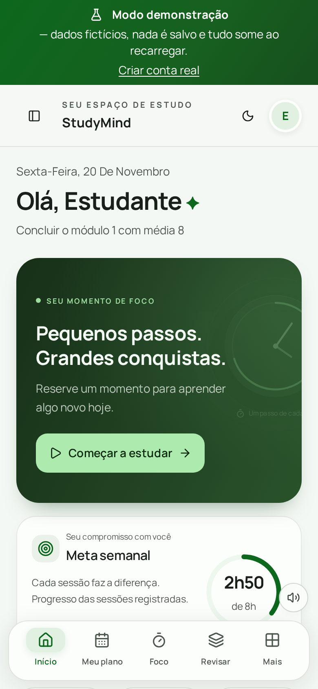

InícioAplicativo

SEU ESTUDO ACOMPANHA VOCÊNo computador.
No computador.
Na palma da mão.
O StudyMind para Android usa um WebView para carregar a plataforma pelo servidor. O APK disponível foi gerado pelo GitHub Actions e é uma versão de desenvolvimento, com acesso às funções da conta pela internet.
- Entre com a mesma conta da plataforma para acessar seus estudos.
- Disciplinas, foco, materiais e revisões dependem do servidor online.
- Compatível com Android 8 ou superior.
Leve o StudyMind com você
Baixe o APK e abra o arquivo no Android para instalar. Esta é uma versão de desenvolvimento e depende de conexão à internet.